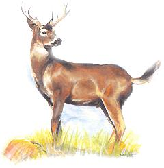
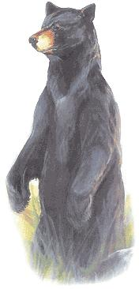
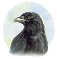
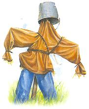
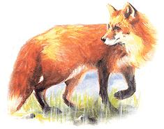
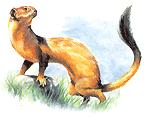

Keep your garden and yard
safe from curious intruders.
"Suburban" While tailed Deer
Kindhearted suburbanites set out high-frequency soundmakers or sprinkle on proprietary deer-repellent concoctions from the pet store. Some collect human waste or gather lion and tiger droppings from zoos and scatter these around the gardens. In our experience, only three methods work: rotten eggs, a big dog with a loud bark and all his own teeth, and a pair of electromechanical devices that are effective against many garden interlopers.
Perhaps the easiest defense is to mix eggs in water and spray on your plants. The eggs will rot imperceptibly, producing an offensive sulphur-dioxide odor. Deer will be repelled by a spray too light for humans to sense. A ribbon of heavy spray surrounding the garden is said to work, but we find that you must spray (lightly) everything in the orchard or garden for full effect. We mix two or three eggs to a gallon of warm water, let it steep for a day, then apply it with a backpack insecticide sprayer set on medium-fine spray. Applications should be renewed weekly in the spring; later, apply only to succulent new growth and fruit every couple of weeks.
A male dog of any thick coated, naturally territorial breed that is trained to patrol your growing areas night and day in all weather will discourage most pests. We like German shepherds, but any large, athletic breed will do, except for golden retrievers, which have been bred to adore all God's creatures.
For a few hundred dollars you can buy a training collar and bury a radio signal generator and broadcast antenna wires to create an "invisible fence" that will establish a perimeter and contain the dog (see " Homestead Hound, Part II "). This is best for densely pop ulated areas.
Living in the distant and sparsely populated boondocks, I find that taking a young dog on frequent leashed walks around the gardens establishes his territory. When he matures, he will patrol it by instinct. Scattering the dog's collected droppings along the route strengthens in his mind the identification of his turf and will further encourage him to move his latrine area out of the yard and along the perimeter of his territory. Keep your dog tied or confined during hunting season, as he may get shot while trying to woof off a party of hunters. Ditto any free-ranging livestock.
Effective against deer, raccoons and black bears (who eat more vegetation than animal matter and adore sweet peas) is a battery-powered transistor radio set in the garden dusk to dawn and tuned to a raucous, all-night rock station. If close to house power, you can plug the radio into an auto-timer and augment the sound with blinking lights; strings of white outdoor Christmas minilights work well. You can also waterproof an electronic project box with electrician's tape and clear mastic and fit it with a blinking red or green LED (light-emitting diode) with an on/off switch and a dry-cell power supply. These are cheap, portable and easy to use. Change the location of radio and lights every few days.
If your garden is within reach of a hose, you can try a motion-sensitive Scarecrow™. Encased in housing that resembles the head of a big-eyed, big-beaked tropical macaw (or enclosed in a less conspicuous, less-scary-to-songbirds plastic rock), this critter repeller made by the Canadian company Contech is a motion-activated water sprinkler that can be staked in your garden or attached to a fence. Fed from your garden hose and powered by a 9-volt transistor radio battery, the Scarecrow comes alive with a chattering oscillator-type water sprinkler whenever anything crosses its 35-foot, arc-shaped field of view. One or two in the corner(s) of your garden plot will send any animal-wild or domestic (except perhaps a duck)-scurrying away unharmed. I find the Scarecrow to be the only device effective against groundhogs and woodchucks, other than a well-aimed load of buckshot or a .22 high-powered .bullet. An owner survey indicates that it's also effective at least 88% of the time against cats and rabbits.
The Scarecrow costs about $70 from reliable mail-order sources such as Real Goods or direct from the Web at www.scatmat.com/scarecro2.htm . There, you will also find an online direct-ordering form and a directory of retail dealers.
Black bears and mountain lions (cougars) pose an increasing threat as natural habitats are reduced by development. Many new-to-the-country folks lack adequate means of self-protection because they weren't raised with the countryman's pioneer-heritage hunting and trapping tradition, nor with his lifelong training in firearms. Also, inappropriate (but well-meaning) no-hunting legislation limits a person's willingness and ability to use guns or traps, even if they know how.
Over the past decade, several people have been stalked and killed by cougars in California. And bear attacks, once rare, are now occurring more frequently nationwide. In national parks, especially around the Boundry Waters trails, camps and canoe routes along the U.S./Canadian border in the upper Midwest, grizzly and black bear attacks have been reported. Last spring, a female hiker was killed and partially consumed by a black bear mother and a yearling cub in Smoky Mountain National Park in the Carolinas. And in early summer, Mary Beth Miller, a top female biathlete, was killed by a black bear just outside of Quebec City in Canada.
Perhaps because they are leaving their dens before natural food is available (global warming has brought shorter winters and earlier springs; see " Endless Summer " ) - both cougars and bears are invading country-home barns and backyards at dusk and early evening all around the continent. Inexperienced yearlings and still-lactating mothers with hungry young are the main culprits. Bears seem to be attracted by the contents of birdfeeders and garbage cans, while cougars are after unrestrained livestock, including small dogs and cats. Both are lured by the meaty smell of an outdoor barbecue.
So, don't attract them. Once weather begins to warm up and sap begins to flow, quit feeding wild birds and bring livestock inside a stout barn at dusk. Never leave garbage out overnight. Don't unpack the barbecue till you see squirrels in the trees and day temperatures are warm. Call small children in well before sunset and keep them in. Get floodlights for the yard and leave them on till the dog wants in for the evening. Don't let the cat stay out at night.
There are legion country dwellers who very purposefully reject the use of firearms of any kind - an opinion certainly to be respected. Others consider one or two very, very carefully stored and maintained guns helpful at least and critically important at most.
I keep a ten-gauge double-barrel cap and ball muzzle-loading shotgun over the back door, loaded with #10 buckshot, fresh percussion caps and a full, fresh charge of XXX black powder. A piercing battery-powered spot-type flashlight is taped to the stock and points to where the barrels are aimed at 50 feet. When the kids were young, it sported a combination trigger lock. Even if the buckshot fails to connect, the flash, roar and cloud of white smoke ought to scare off any threatening critter.
Even on a deep-woods hunting trip, I carry one of Cabela's .44 caliber LeMat cap and ball, nine-shot revolvers muzzle-loaded with a low charge of 25 grams of black powder under round ball ammo. I also carry a 20-gauge shot barrel loaded with No. 5 "blue meanie" miniballs (General George Washington's favorite ammo) in a tie-down, cross-draw holster.
Neither size shot should be lethal or cause serious injury to a mature, thick-coated bear or cougar except at point-blank range, but either would give any animal short of a Cape buffalo serious pause - and give us time to hightail it. If the animal persists, there's always the other barrel of the blunderbuss or a full nine-shot cylinder in the .44 and a spare loaded cylinder or two on the holster belt.
Crows and ravens are so ingeniously clever that many traditional Amerindian cultures considered them kindred spirits. They remain so for some of us today. In the spring, crows delight in harvesting newly planted seed succulents, especially your just-sprouted sweet corn.
They'll monitor newly plowed and planted fields and swoop down at first light to pull seed corn when the first tips of green sprouting leaves appear above ground. By the time you are up to inspect the field, all you'll find of your hoped-for corn crop are lines of little pits in the soil with scatterings of nipped-off leaves and roots, along with crow tracks and droppings.
Traditional scarecrows made from wooden crosses garbed in loose garments and stuffed in straw are effective visual deterrents. The most successful ones are made from a lightweight material hung on fine thread close to the ground. It will move when the air is disturbed by a large bird flaring its wings to land. Sensing any unexpected movement - especially of a shiny and unnatural polished material - the crow will abort the landing and flap away, cawing out its raspy warning. Scarecrows can be made from strips of light-colored, lightweight cloth. More effective - and waterproof, so they won't sag after a rain - are thin strips of tin foil on thread attached to thin ends of sapling whips poked into the ground every five or six feet throughout the garden. You ran also hang foil from of threads strung between stakes surrounding the plot.
Be sure the foil strips are free to move in the air; snagged on soil or a plant, they are useless. If crows are thick in your area, be sure to change the foil strip locations every day till the seedlings are too large for the crows to pull out. Eventually, the crows will accept defeat and move along.
You can also purchase "big-eye balloons" that are inflated and hung from whips around the garden. They are designed to hang with their fearsome eyes looking down and out of sight until disturbed, but with the slightest wind, the "eyes" printed on the balloon whip up, looking for all the world like a pouncing cat.
Lastly, the (arguably costly at $200) Vigilante Helikite from Allsopp, an adjustable-height combination balloon/kite, has the advantage of a disturbing and constantly changing motion. Even if grounded by heavy rain, the kite will relaunch itself in the next dry gust and patrol the garden 24 hours a day.
Another clever critter that's part of Amerindian lore is the native rat - the several species of small, brownish-colored, savagely wild wood rats that can (and will) bite if cornered. Rats can find a way to get into practically anything that contains food; they're voracious for grain. They'll take whole or milled grain, molasses-dosed stock grain, pig or rabbit pellets, or dog food from your storage and haul it by the cheekful to storage chambers in their complexes. What's left of your stored grain will be destroyed by the droppings the rats leave behind.
Rats will also harvest newly planted corn or other grain. Don't slop seed on the soil surface as you plant; if you do, rats will find it and then snoot around, detecting and digging up much of what you've planted. Smaller rodents, such as voles (seldom-seen, shrew-like, pointy-nosed, grey, mouse-sized rodents) and field mice can do so as well, but not as voraciously. When wood rat populations surge, losses can be severe.
Store feed in varmint-proof, stout metal trash cans with secure lids. To protect stored grain from larger (and smarter) animals such as bears or raccoons, secure tight-fitting lids with elastic bungees. Even better - as they can't be gnawed through - are long metal springs with hooks on the ends that snag over metal handles on each side of the bin.
If birdseed-conditioned black bears can get into your barn, mere trash cans will not hold up against the bears' strength and intelligence. In these cases you can secure grain storage containers inside bear-proof compartments such as a whole-log cold storage dug into a hillside, a barn room walled with flush doors and inch-or-thicker oak-plank walls fitted tightly on the exposed surface, or in a heavy steel Dempsy-Dumpster-type trash bin with a deadbolt on the lid.
For larger-scale grain storage, rivet together corrugated sheet steel or buy 12-foot-high commercial spout-fitted steel grain hoppers or build a wooden corn crib with its skirts sheathed in aluminum flashing. (visit www.motherearthnews.com/doityourself )
As we learned during childhood from Christopher Robin, "A bear loves honey; I wonder why he does ...buzz, buzz..." Bears will attack your honeybee colonies, especially in earliest spring. I've tried protecting beehives with hotwire - regular, smooth fence wire on plastic insulators charged with a conventional fence charger - but the brief, weak zaps that turn away livestock and deer don't phase hungry black bears. Surrounding hives with close spirals of electrified barbed wire seems to work better, as the barbs get through bear hide and hair.
Rats, weasels, skunks, foxes, raccoons and feral house cats will raid the chicken coop - especially in spring when they have young to feed. A Hav-a-Hart-type live trap set on firm, level ground out side the henhouse and baited with fresh liver will usually trap the interloper.
Once you've captured it, take the trap (covered with a thick cloth to calm a skunk) a good five miles into the woods, open the door and wait till the animal has left the area to recover the trap.
To keep critters from digging under the shed or gnawing their way in, dig a two-foot-wide strip of fine-mesh fence wire six inches deep into the soil around the pen and staple another strip along the base of the pen walls. Use spool wire to weave together their adjoining borders. Fence over any holes already gnawed in the walls or eaves. A double line of conventional hot wire along the bottom of pen walls will further discourage entrance.
Wild hares and rabbits, meadow mice and voles will girdle the tender bark of young fruit trees, bush fruit and grape vines in winter. Dig out sod and soil around the trunk to several inches below ground. Encircle trunks with spiral-cut plastic sheet or small-mesh metal hardware cloth to a foot and a half above ground level (or to 18 inches above expected snow depth). Be sure to remove in spring to let trunk expand. Replace for the second winter if bark is still thin.
Rodents will also eat root vegetables left in the garden during the winter. Either plant enough extra for them or pull and store roots in an indoor root cellar.
Pests around the house can be more than a nuisance; they can carry human diseases. Although cases are rare, bats can carry rabies, and mice can host and pass on a potentially fatal hantavirus. Pests belong outdoors. Discourage their entrance by nailing flashing over entry holes in the house. When removing rodent droppings, wear a dust mask or wet the mess down well to avoid breathing in any infected dust.
Bats will spend the daylight hours in cracks in the house cladding, but prefer to roost in groups high inside attic ceilings. Fill cracks along eaves with steel wool, puttied in so it won't rust and stain house paint. Inside, shine a 24-hour spotlight into the bats' roosting areas. A loud radio in the space will further irritate them, and they will soon roost elsewhere.
Small rodents are best controlled by house cats. The stub-tailed Maine coon cat grows to be huge and is a prime mouser. So are most nonpedigree strays. Purebred show cats may be gorgeous and easy to handle, but they can be all show and no go in the mousing business.
Neuter your cats to keep the unwanted pet supply down, keep them indoors to protect baby cottontail bunnies and songbirds, and feed them well to keep them hunting vermin. Lavish them with praise when they present you with a revolting little critter's carcass, and let them play with a pitiful, injured-but-still-alive rodent till they get bored and go looking for a fresh one. To make litterbox cleaning chores for good mousers minimally ghastly, cover insides of the litter box with foil or Kraft paper and dump the lot at each litter change.
If you suspect a skunk or raccoon has taken up winter residence under the porch, use the strong-light-and-rock-music remedy that evicts bats and keeps raccoons from harvesting the corn.
Finally, at the end of wood-heating weather in the spring, wedge a piece of fine-mesh poultry wire or hardware cloth into the top of your woodstove's flue. It will let creosote evaporate and won't interfere with the occasional summer hearth fire, will keep climbing raccoons and feral cats from raising young in the flue bottom, and will discourage chimney swifts from raising broods in stick-and-mud nests glued to the flue liner. The fur-lined mammal nests and tinder-dry stick nests of the birds can easily ignite and cause a flue fire.
Pest control and HOMESTEADING in cyberspace. www.motherearthnews.com
|
 |
|
 |
|
 |
 |
 |
|
 |
|
|